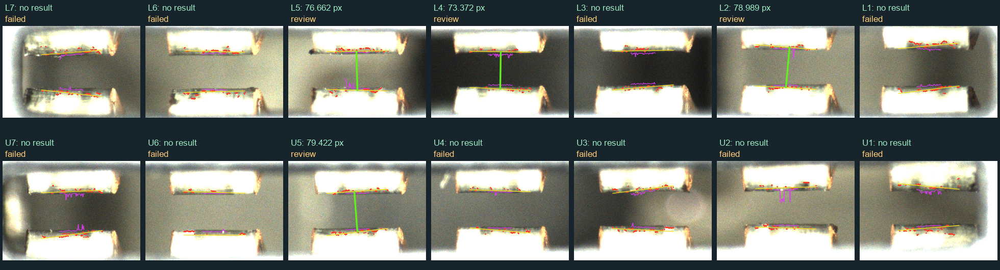
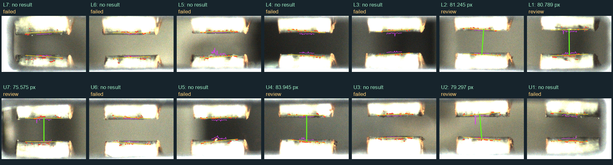
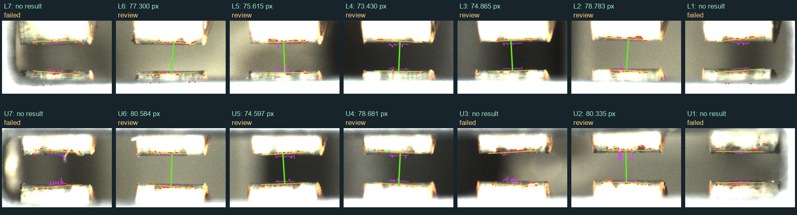
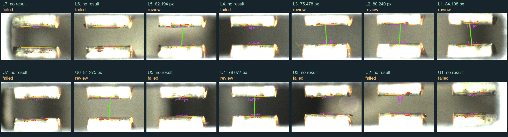
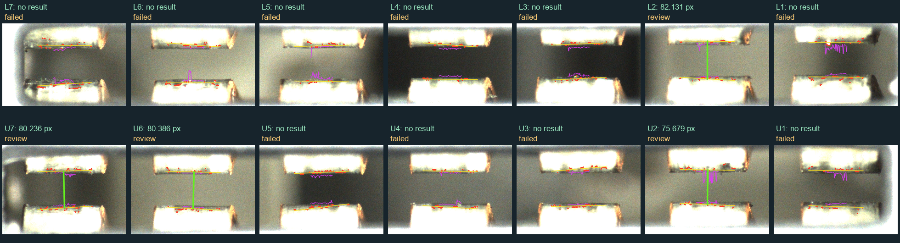
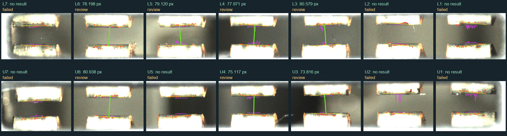

图片上排从左到右 L7 → L1，下排 U7 → U1。数据表统一按 U1～U7、L1～L7 排列；逐点明细同时记录物理行、列与实验室单元格。
本次原图测量：6 张 × 2 排 × 7 点。直线候选通过内部诊断 0 点、待复核 35 点、未出数 49 点。手动四点尚未完成；初始记录为空。
垂距定义：下线段中点到上直线的垂距（待与实验室确认）。也保存反向垂距和夹角；不平行时，两条无限直线没有唯一的恒定间距。上下排仅做平移定位，尚未验证任意旋转或新工装。
直接换算使用当前表 P9：0.010723579307 mm/px，是样本拟合比例，不是独立物理标定。下表的方法比较分别在训练产品上重估比例及逐位置偏移，误差 = 预测 − 实验室。原 XLSX 未修改。
| 方法 | 评估方式 | 覆盖 | 平均绝对误差 | RMSE | 最大绝对误差 | 最大误差位置 |
|---|---|---|---|---|---|---|
| 原49列中位数 | 同批拟合回算 | 84/84 | 0.01915 | 0.02667 | 0.09019 | 1.png / U5 |
| 原49列中位数 | 整件留一：5件训练/1件预测 | 84/84 | 0.02299 | 0.03203 | 0.10873 | 1.png / U5 |
| 121列直线候选 | 同批拟合回算 | 0/84 | — | — | — | / |
| 121列直线候选 | 整件留一：5件训练/1件预测 | 0/84 | — | — | — | / |
6 张图同时用于开发，整件留一仍只是探索比较，不是独立验收。待复核点也计入统计，没有按实验室误差删点；失败点保持空值，覆盖数量不同的指标不能直接视为精度改善。实验室手动选点差异尚不能解释全部误差。产品公差 ±0.12 mm 不是测量系统的允许误差。
直线候选未计算补偿误差：U1、L7 没有可参与拟合的读数，无法按预定的14位置模型估计共同比例及全部补偿量。表中的“—”表示不能评估，绝不是误差为零。其余候选像素值仍完整保留。
| 位置 | 原算法 MAE | 直线候选 MAE | 原算法最大绝对误差 | 直线候选最大绝对误差 |
|---|---|---|---|---|
| U1 | 0.01065 | — | 0.03095 | — |
| U2 | 0.01105 | — | 0.02104 | — |
| U3 | 0.02907 | — | 0.05190 | — |
| U4 | 0.05971 | — | 0.08116 | — |
| U5 | 0.03701 | — | 0.10873 | — |
| U6 | 0.00998 | — | 0.02613 | — |
| U7 | 0.01131 | — | 0.02386 | — |
| L1 | 0.02772 | — | 0.06783 | — |
| L2 | 0.00520 | — | 0.01323 | — |
| L3 | 0.04720 | — | 0.08078 | — |
| L4 | 0.02906 | — | 0.05950 | — |
| L5 | 0.02301 | — | 0.03710 | — |
| L6 | 0.00937 | — | 0.01830 | — |
| L7 | 0.01146 | — | 0.01878 | — |
| 图片 | U1 | U2 | U3 | U4 | U5 | U6 | U7 | L1 | L2 | L3 | L4 | L5 | L6 | L7 |
|---|---|---|---|---|---|---|---|---|---|---|---|---|---|---|
| 1.png | — | — | — | — | 79.42171 | — | — | — | 78.98854 | — | 73.37203 | 76.66155 | — | — |
| 2.png | — | 79.29742 | — | 83.94522 | — | — | 75.57475 | 80.78870 | 81.24535 | — | — | — | — | — |
| 3.png | — | 80.33481 | — | 78.68120 | 74.59724 | 80.58420 | — | — | 78.78312 | 74.86544 | 73.43026 | 75.61469 | 77.30050 | — |
| 4.png | — | — | — | 79.67718 | — | 84.27468 | — | 84.10799 | 80.24048 | 75.47820 | — | 82.19412 | — | — |
| 5.png | — | 75.67859 | — | — | — | 80.38612 | 80.23595 | — | 82.13105 | — | — | — | — | — |
| 6.png | — | — | 73.81589 | 75.11727 | — | 80.93847 | — | — | — | 80.57936 | 77.97110 | 79.11987 | 78.19786 | — |






复核方法：在交互工具中选位置，放大原图；依次点上边两点、下边两点，并确认记录。自动建议必须人工确认才能计为已复核；导出 JSON 保存坐标，CSV 保存尺寸。程序不替代人工确认实验室采用的实体边界和非平行距离规则。
首轮仅按最强梯度取边时，3.png 的 L7 下线跳到底板亮边；该轮 JSON、统计及6张局部图保存在 diagnostic_first_strongest 目录，作为防跳边修复的诊断记录。最终结果不能替代新产品、重新放置拍照后的验证。